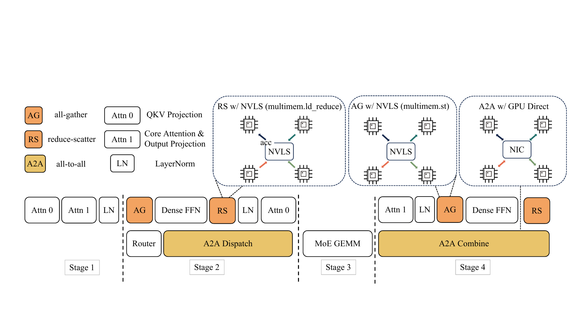
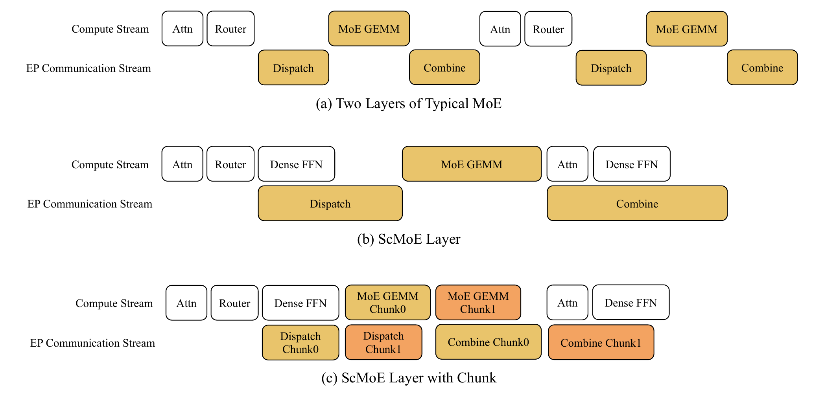
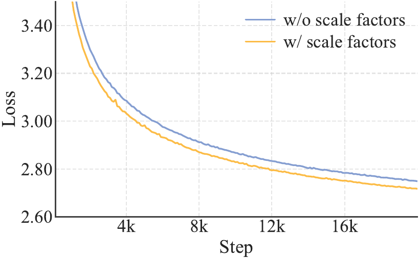
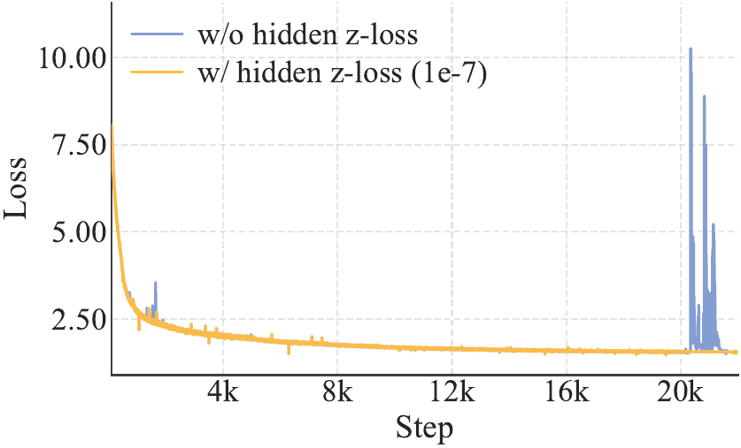

1
架构总览 + Zero-Comp Experts
LongCat-Flash 是 28 层 MoE 基座，512 FFN experts + 256 zero-computation experts，每 token TopK=12，平均激活 27B（区间 18.6B – 31.3B）。配套 MLA、ScMoE、Variance Alignment、Hidden z-loss 和 Adam ε=1e-16 等整套 stability 套件。mid-training 阶段 STEM+code 已占 70%，为后续 agent post-training 铺路。

图：推理架构总览src/assets/inference-architecture.png '">
图 1：LongCat-Flash 推理架构总览（MLA + ScMoE + SBO 4 阶段流水）
Zero-Comp Experts：动态计算预算
在 512 个 FFN 专家之外再加 256 个 identity 专家——输入直接返回，零计算开销。路由器对所有 768 个专家统一 TopK=12，实际 FFN 专家数随 token 上下文重要性变化。简单 token（功能词、数字、标点）→ zero experts；深层 token → 按预测难度分配。
PID controller 控制预算
用 PID controller 调整 expert bias 控制全局平均激活比例，保证计算预算稳定收敛到目标值。训练 ~20B tokens 后，平均激活专家数稳定、fluctuation < 1%，但 std 维持在 ~3——证明模型确实在"看 token 给算力"。
MLA（Multi-Latent Attention）借鉴 DeepSeek-V2 的低秩 KV 压缩思路；ScMoE 借鉴自家 ICCV'24 工作；Variance Alignment 系列 trick 解决"小尺寸验证的设计到大尺寸失效"问题——这一整套让 560B 训练在 30 天内用 20T tokens 稳定收敛。

图：ScMoE 跨层 shortcut overlapsrc/assets/overlapped_scmoe.png '">
图 2：ScMoE 跨层 shortcut — dense FFN 与 all-to-all 完全 overlap
ScMoE：跨层 shortcut 拉长 overlap
从前一层的 dense FFN 输出直接拉一条 shortcut 到当前 MoE 层，让 dense FFN 的计算和当前层的 all-to-all dispatch/combine 完全 overlap。比 shared-expert 强：shared expert 只能用一个小计算窗口做 overlap，ScMoE 用整个 dense FFN 的计算窗口。
关键证据：comm 25.3% → 8.4%
2.4B/3B/15B 三尺寸 loss 几乎完全重合（quality-neutral），但 comm 时间占比从 25.3% 降到 8.4%。配合推理端 SBO 4 阶段流水（MLA / Dense FFN / MoE GEMM / all-to-all overlap），TPOT 比 DeepSeek-V3 的 TBO 降低 ~50%。

图：MLA 规模对比src/assets/mla_scale_comparison.png '">
图 3：MLA 在不同 model scale 下的 variance 校正效果
Variance Alignment: $\alpha_q,\alpha_{kv}$
在 $c_t^Q$、$c_t^{KV}$ 前乘 $\sqrt{d_{\text{model}}/d_q}$ 和 $\sqrt{d_{\text{model}}/d_{kv}}$，抵消 MLA 低秩分解的 variance mismatch。
Fine-grained expert: $\gamma=m$
Fine-grained segmentation 把方差缩 $m^2$ 倍（gating + hidden dim），所以给 expert 输出乘 $\gamma=m$ 拉回原方差。
Adam ε = 1e-16
传统 1e-5 在大模型 + 小初始化 + 大 batch 下会 dominate gradient 二阶矩，导致性能崩溃。1e-16 是稳定训练的关键开关。
3
实验结果：与 DS-V3 / Kimi-K2 同档
在 27B activated（比 DS-V3.1 少 10B、比 Kimi-K2 少 5B）的情况下，LongCat-Flash 在 reasoning / math / code 大部分项 持平或更好，且推理端达到 H800 上 100 TPS/user、$0.7/M output tokens。
| Benchmark | DS-V3.1
37B act. | Kimi-K2
32B act. | LongCat
27B act. |
|---|
| 知识 / 综合 |
| MMLU | 87.46 | 87.47 | 87.05 |
| MMLU-Pro | 59.29 | 68.36 | 70.32 |
| BBH | 89.46 | 89.19 | 90.54 |
| 推理 / 数学 |
| GPQA | 47.16 | 45.89 | 51.09 |
| SuperGPQA | — | 44.70 | 52.03 |
| MATH | 65.38 | 66.74 | 69.28 |
| 代码 |
| MultiPL-E | 62.00 | 59.22 | 69.25 |
| CRUXEval-O | 71.25 | 68.75 | 75.88 |

图：loss 训练曲线src/assets/loss.png '">
图 4：LongCat-Flash 预训练 loss 曲线（30 天 / 20T tokens）
Base Model 在 27B activated 下持平或领先
尽管激活参数比 DS-V3.1 少 10B、比 Kimi-K2 少 5B，LongCat-Flash 在 MMLU-Pro / SuperGPQA / CRUXEval 等难 benchmark 上取得断崖式领先。同时推理成本（$0.7/M tokens）显著低于竞品——agent / 高并发场景的关键卖点。
① Zero-Comp Experts
512 FFN + 256 identity 专家，PID controller 控制平均激活 = 27B。简单 token 自动走 zero experts，动态计算预算。
② ScMoE 跨层 shortcut
从 dense FFN 拉 shortcut 到当前 MoE 层，让 comm 和 dense FFN 完全 overlap。Comm 从 25.3% 压到 8.4%。
③ MLA 高效 attention
低秩 KV 压缩 + scale-correction（$\alpha_q,\alpha_{kv}$）抵消 variance mismatch。MLA 在 560B 规模上仍然 quality-neutral。
④ Variance Alignment 稳训
Variance Alignment + Hidden z-loss + Adam ε=1e-16 + Model Growth（14→28 层 stack）。每个 trick 都有明确 failure mode 诊断。